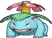
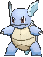
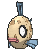
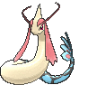

-
Bulbasaur #001

- Grama
- Veneno
Há uma semente de planta em suas costas desde o dia que este Pókemon nasce. A semente cresce lentamente.
-
Ivysaur #002

- Grama
- Veneno
Quando o bulbo em suas costas cresce, parece perder a capacidade de ficar de pé em suas patas traseiras.
-
Venusaur #003
- Grama
- Veneno
Sua planta floresce quando está absorvendo energia solar. Ele permanece em movimento para buscar a luz solar.
-
Charmander #004

- Fogo
Tem preferência por coisas quentes. Quando chove, diz-se que o vapor jorra da ponta de sua cauda.
-
Charmeleon #005

- Fogo
Tem uma natureza bárbara. Na batalha, ele chicoteia sua cauda ardente e corta com garras afiadas.
-
Charizard #006

- Fogo
Ele cospe fogo que é quente o suficiente para derreter pedregulhos. Pode causar incêndios florestais soprando chamas.
-
Squirtle #007

- Água
Quando ele retrai seu longo pescoço em sua concha, ele esguicha água com força vigorosa.
-
Wartortle #008
- Água
É reconhecido como um símbolo de longevidade. Se sua concha tem algas, esse Wartortle é muito antigo.
-
Blastoise #009

- Água
Ele esmaga seu inimigo sob seu corpo pesado para causar desmaios. Em uma pitada, ele se retirará dentro de sua concha.
-
Vulpix #037

- Fogo
Vulpix pode manipular o fogo com tanta precisão que cria mechas flutuantes de chamas. Dentro de seu corpo há uma chama que nunca se apaga.
-
Ninetales #038

- Fogo
Chamas expelidas de sua boca podem hipnotizar um oponente e diz-se que seus brilhantes olhos vermelhos lhe dão a habilidade de controlar mentes.
-
Psyduck #054

- Água
Fica constantemente atordoado com sua dor de cabeça, geralmente fica imóvel, tentando acalma-lá. No entanto, quando a dor de cabeça se torna muito forte, Psyduck libera tensão na forma de fortes poderes psíquicos.
-
Feebas #0349
- Água
Feebas é famoso por sua aparência desleixada e é considerado o Pokémon mais desleixado. Devido à sua aparência pobre, é amplamente ignorado por predadores, treinadores e pesquisadores. No entanto, este Pokémon resistente é capaz de comer qualquer coisa e viver em qualquer lugar.
-
Milotic #0350
- Água
Dizem que Milotic é o mais bonito de todos os Pokémon. Quando há brigas, ele tem o poder de acalmar sentimentos de raiva e encerrar discussões, liberando uma onda de energia. Além disso, ele pode se mover flutuando no ar.
-
Shaymin #0492

- Grama
Ele absorve o ar poluído, purifica-o dentro de seu corpo, decompõe-no em água e luz e libera a substância purificada em uma explosão violenta e explosiva. Seu poder varia de acordo com o tipo de poluição absorvida. Shaymin também pode se comunicar por telepatia e sentir a gratidão dos outros.